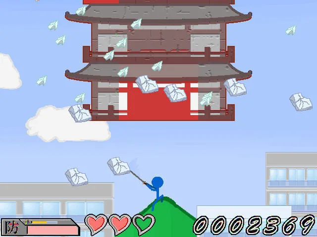
그것은 90년대생들이 학교 컴퓨터실에서 자주 하던 '건물부수기'
원래 제목은 '빌딩을 벤다'는 뜻인 키루비루(斬るビル)다.
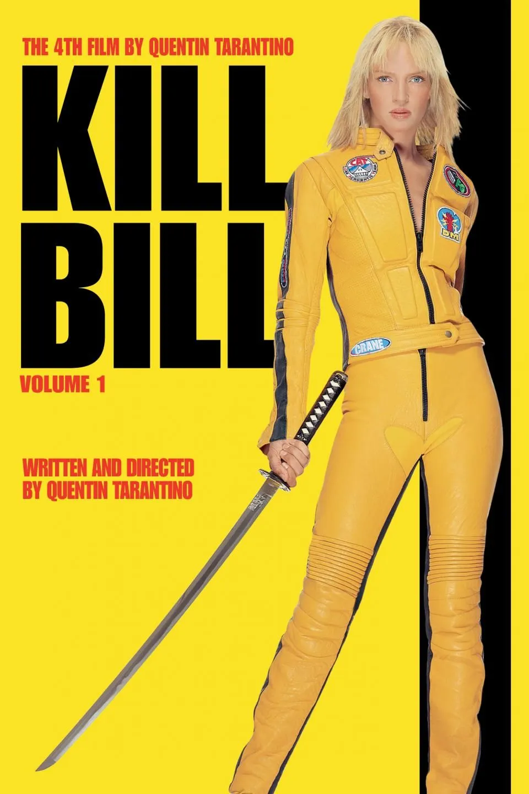
일본에서 영화 킬빌을 '키루비루'라고 발음하기 때문에, 이를 이용한 말장난.
근데 이 게임에도 스토리가 있다는 걸 알고 있는가?
1986년에 어느 과학자의 연구로 달에 토끼가 살고 있다는 사실이 밝혀졌다. 1992년에 민간 연구원이 달과의 교신에 성공했고, 달 토끼에게 지능이 있음을 발표했다.
사람들은 달토끼에 흥미를 갖고 이야기꽃을 피웠는데, 1996년, 달 표면을 저공 비행하던 우주왕복선이 파괴됐다.
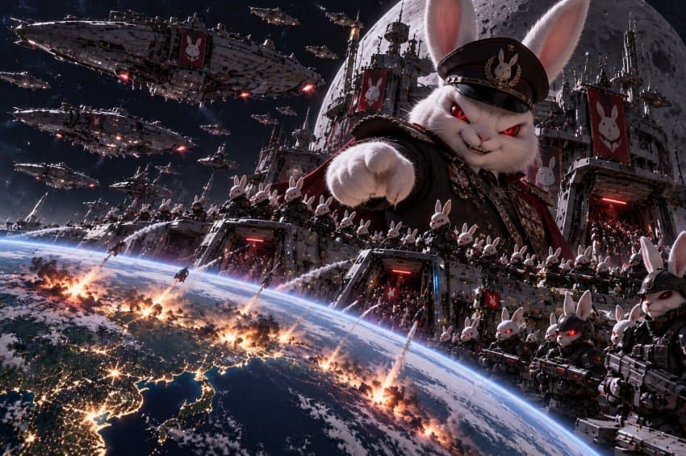
달토끼들의 소행이었다.
이들은 인간과 비교할 수 없이 우월한 지능을 갖고 있었다. 토끼들은 1999년, 완전항복을 요구하면서 지구를 침략했다. 토끼들에게는 사람이 만든 병기가 전혀 통하지 않아 속수무책이었다.
2000년 인류는 토끼들을 무찌르기 위한 '월영작전(달 그림자 작전)'을 위해 전 세계에서 후보자들을 모았다.
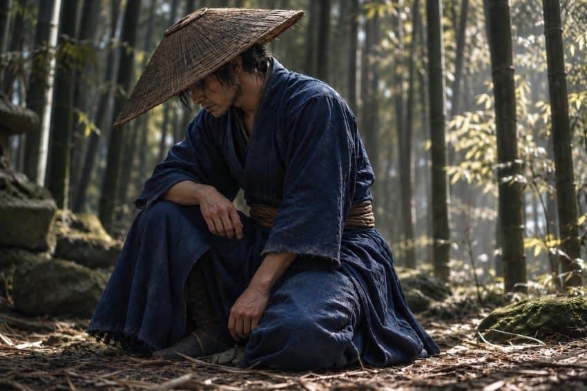
2002년, 후보자 중에서 '신토 쿠로우도'란 초인적인 신체능력을 지닌 사무라이가 월영작전을 실행할 사람으로 뽑혔다.
그가 인류의 마지막 희망이었다.
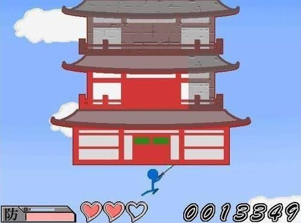
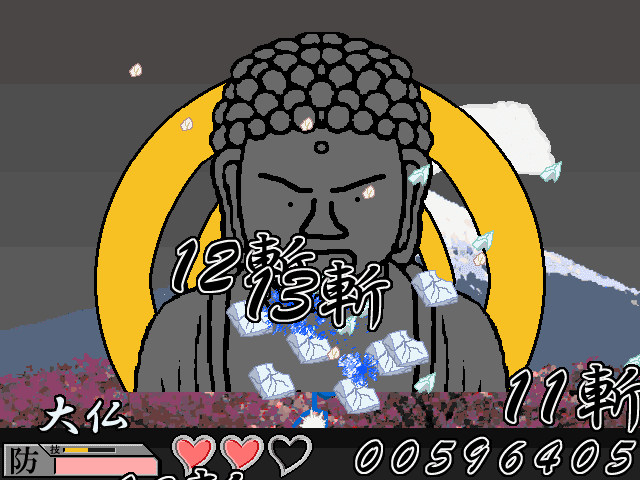
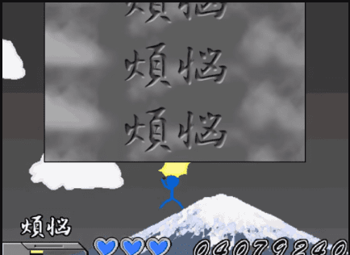
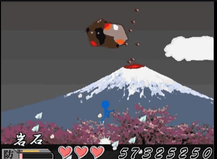
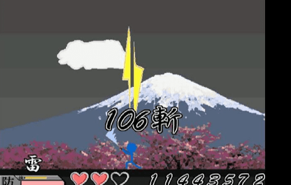
그는 월영작전을 위해 수행을 시작한다. 건물, 불상, 비석, 암석... 나중엔 번개까지 벨수 있게 된다.
한편 달토끼들은 2003년 최후통첩을 한다.
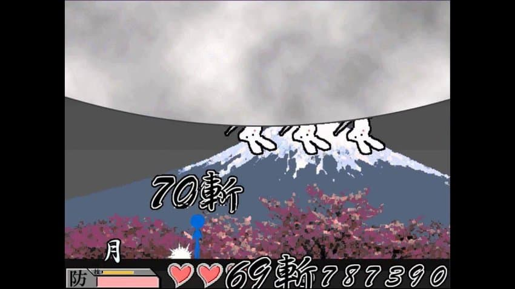
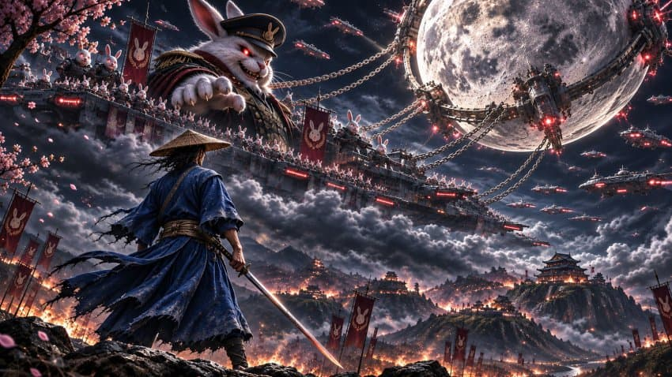
2004년 4월, 달토끼들은 달까지 끌고 왔고, 신토는 혈혈단신으로 달을 부수고 달토끼들을 격퇴해 인류를 구해낸다.
왜 이런 스토리가 있는 것을 몰랐을까?
마지막 달 스테이지 전과 후에야 일본어로 스토리가 나오기 때문이다.
꽤 어려운 게임이라 달 스테이지까지 가기도 힘들고, 가더라도 일본어라서 해석할 수 있는 사람이 별로 없었다.
그래서 거의 대부분 줄거리를 모른 것이다.
사악한 달토끼들에게서 인류를 구한 신토 쿠로우도에게 감사한 마음을 갖자!
댓글
수집 당시 댓글 38개
ㅇㅇ · 11.06 00:11:24
· 트리니티호감고닉미카 · 11.06 00:19:37
ㅇㅇ · 11.06 00:12:17
ㅇㅇ · 11.06 00:15:20
파치카 · 11.07 01:35:57
ㅇㅇ · 11.07 01:38:37
ㅇㅇ · 11.07 01:43:17
ㅇㅇ · 11.07 02:25:55
ㅇㅇ · 11.07 02:42:14
ㅇㅇ · 11.07 02:47:00
ㅇㅇ · 11.07 02:47:05
키나루디안마기 · 11.07 03:19:37
ㅇㅇ · 11.07 03:48:17
ㅇㅇ · 11.07 04:35:12
ㅇㅇ · 11.07 04:47:05
ㅇㅇ · 11.07 06:04:06
ㅇㅇ · 11.07 06:20:38
ㅇㅇ · 11.07 07:11:25
ㅇㅇ · 11.07 07:34:39
냉혹한푸른곰팡이 · 11.07 08:11:22
진지험 · 11.07 08:11:24
ㅇㅇ · 11.07 08:13:00
ㅇㅇ · 11.07 08:29:09
ㅇㅇ · 11.07 09:50:25
ㅇㅇ · 11.07 10:27:34
운빨좆망겜 · 11.07 10:34:44
ㅇㅇ · 11.07 10:57:00
골방철학자 · 11.07 11:12:00
ㅇㅇ · 11.07 12:22:14
· 올포원 · 11.07 14:05:12
ㅛㅛ · 11.07 12:47:30
ㅇㅇ · 11.07 13:11:50
ㅇㅇ · 11.07 13:19:02
ㅇㅇ · 11.07 13:30:22
· ㅇㅇ · 11.07 14:07:00
· ㅇㅇ · 11.07 14:09:24
ㅇㅇ · 11.07 14:06:53
JungNu · 11.07 15:21:43